Itinerario logico ed evidente, peraltro più semplice della classica cresta est che abbiamo percorso in discesa. Lo chiamerei anche «spigolo sud», per analogia col Cuar, ma mi pare esagerato.
Percorriamo il bellissimo sentiero degli stavoli del Palar (Culciis, Savut, Filosa) che è davvero piacevole e rilassante. Il troi è sempre ben evidente, eccetto in brevi tratti dove bisogna fare attenzione ai tagli sui rami, su cui anche noi abbiamo dato una mano. Per «valorizzarlo» basterebbero una tabella alla partenza e nei bivii.
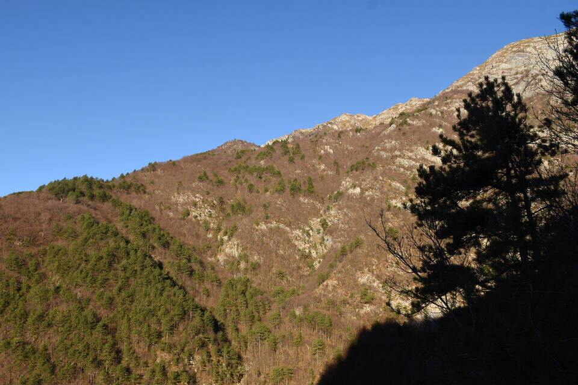Lo stavolo meglio conservato del Cuel dal Mus.
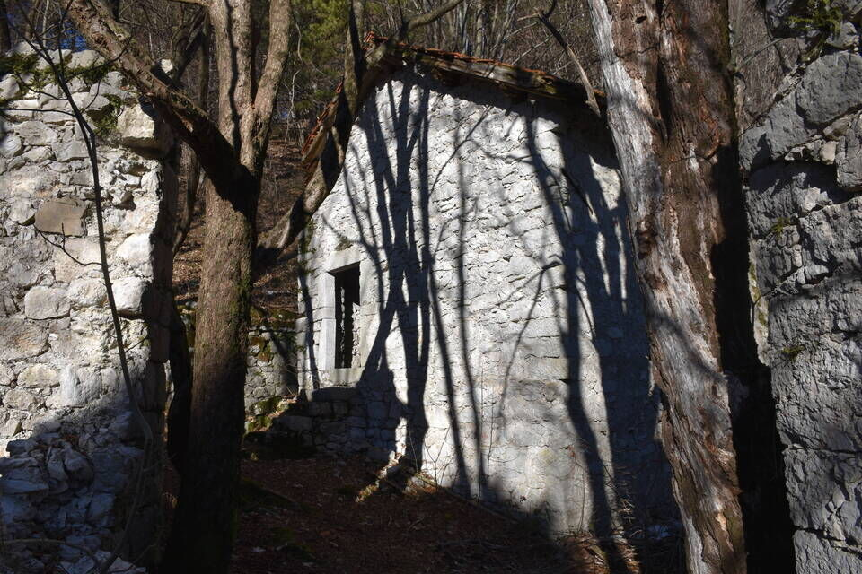Relazione: dal Cuel dal Mus su sempre dritti sul costone, senza difficoltà né incertezze.
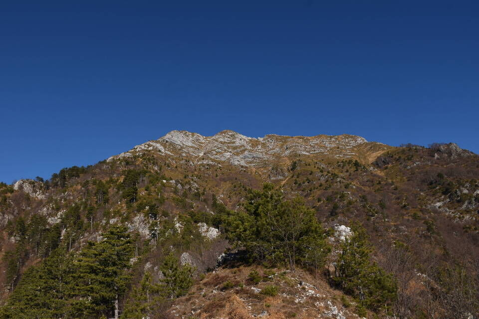Vediamo anche la cresta sud del Piombada: assieme al Cuar e al Piciat forma un bel «trittico delle Prealpi» da salire per i corrispettivi spigoli/creste sud.
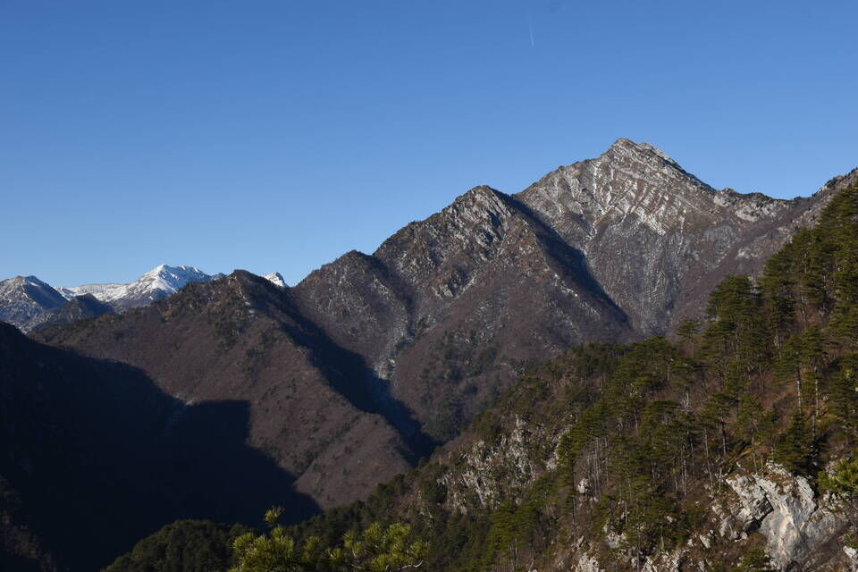
Chiaramente la cresta del Piciat è raggiungibile in mille altri modi da sud, e anzi probabilmente ci sono vecchi sentieri che portano alquanto in alto.
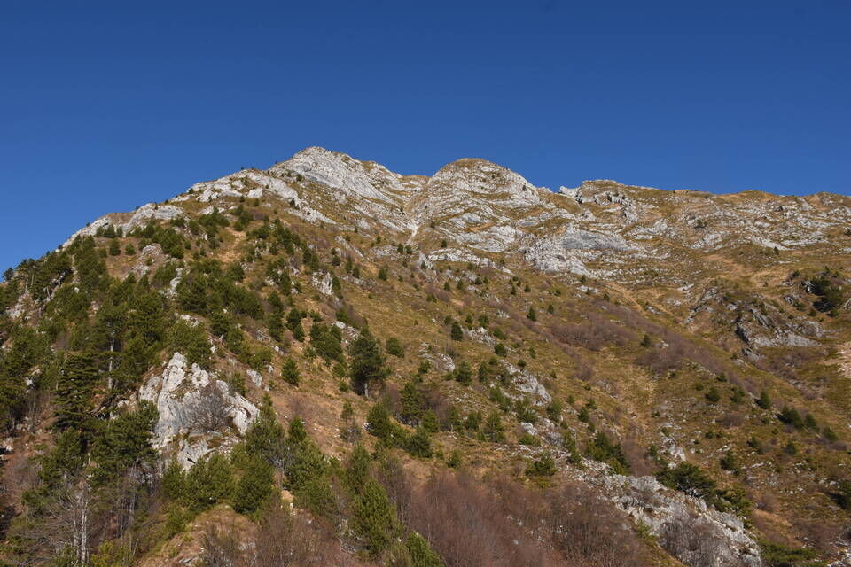Verso i risalti terminali, un ninín più ripido.
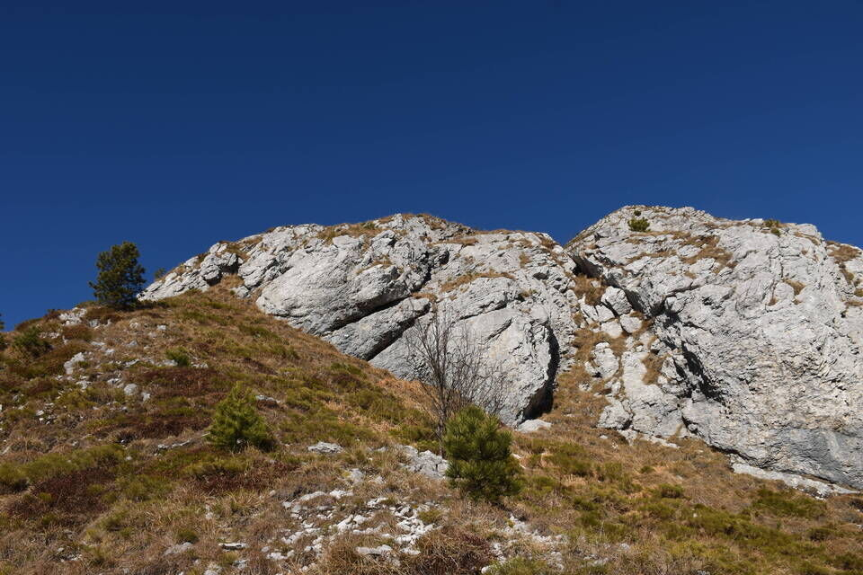 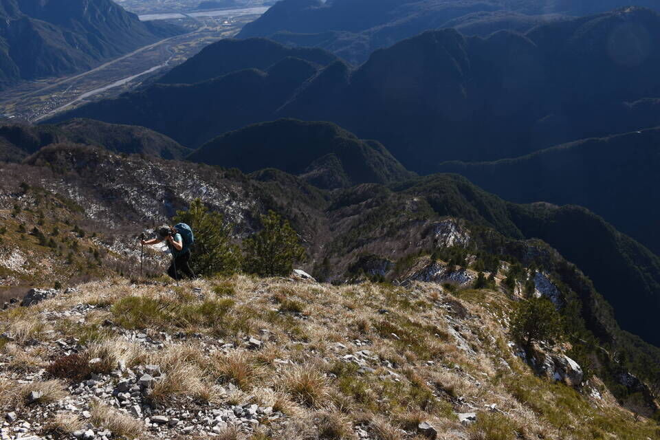 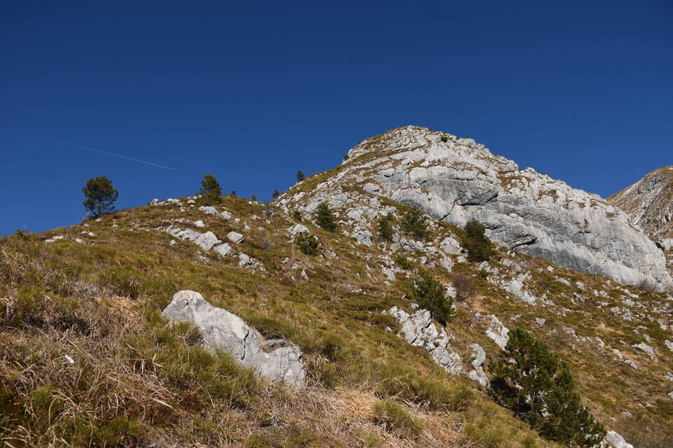 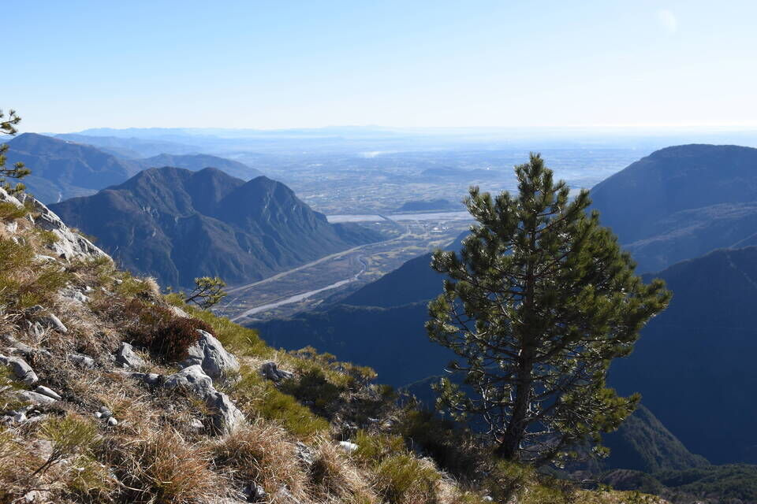Dalla cima verso l'Amariana.
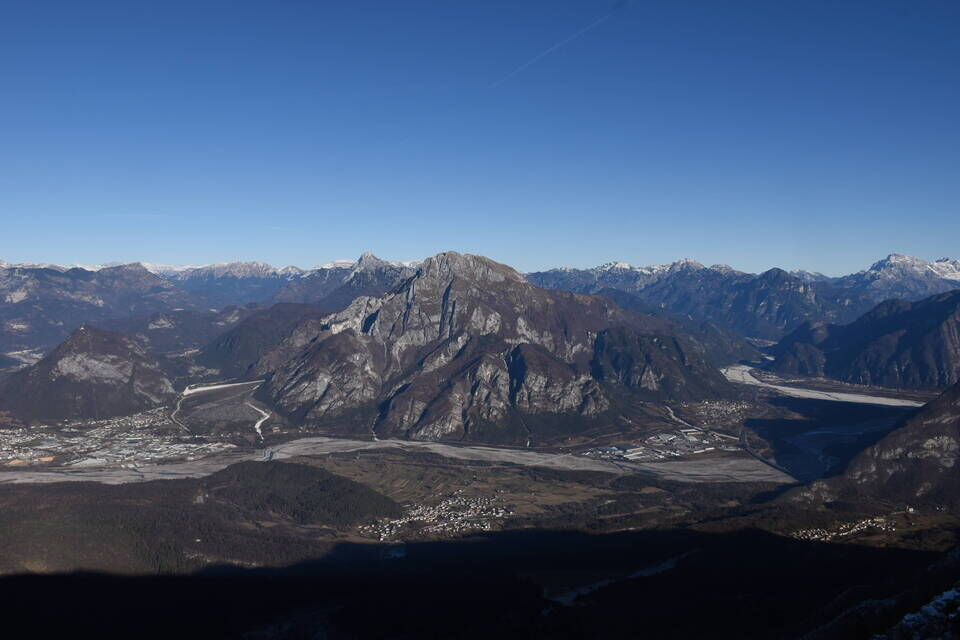Carnia.
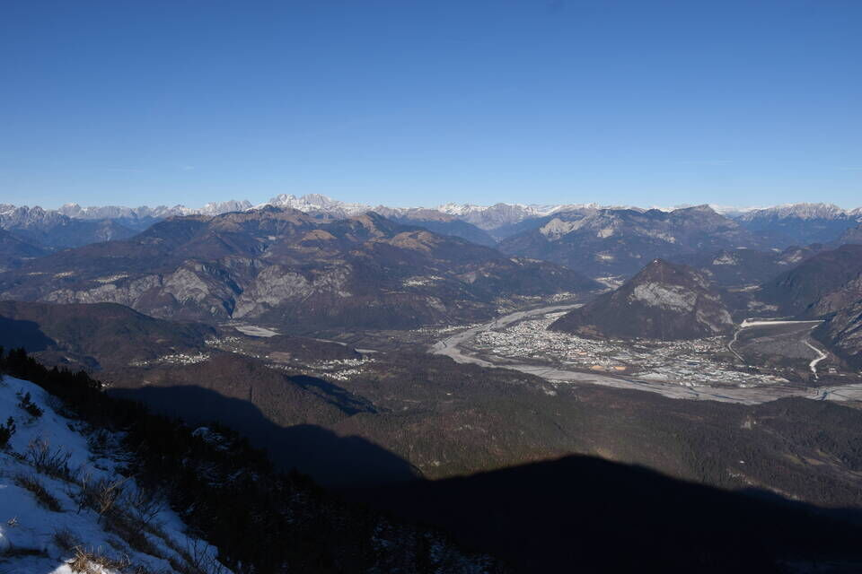E via per cresta a concludere l'anello.
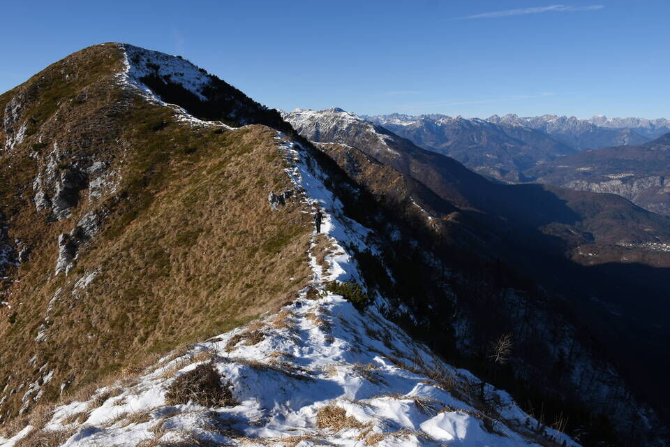 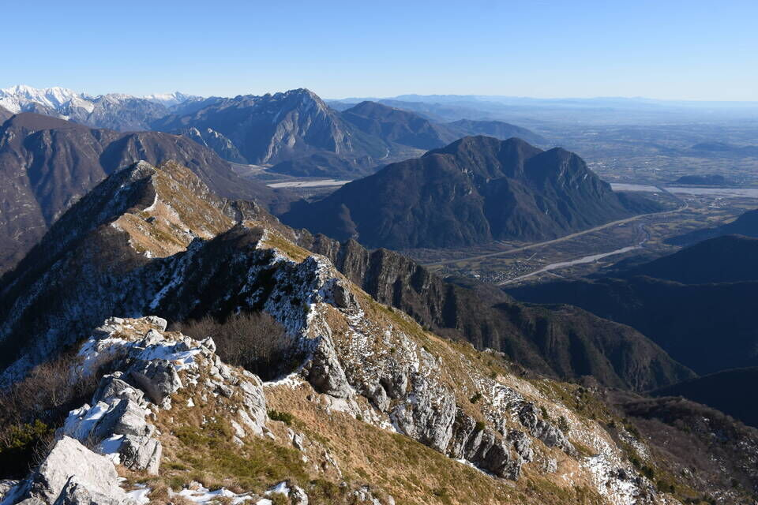Dopo Cima Sompalis abbiamo combinato un pasticcio tremendo: alcuni bolli ci hanno sviato facendoci mancare il bivio con la traccia che scende verso sud (q927) e in modi assai rocamboleschi all'imbrunire siamo scesi alla zona denominata Falcjar, da cui giù in paese. Noi ci perdiamo quando ci sono i bolli! Insomma: fate attenzione!
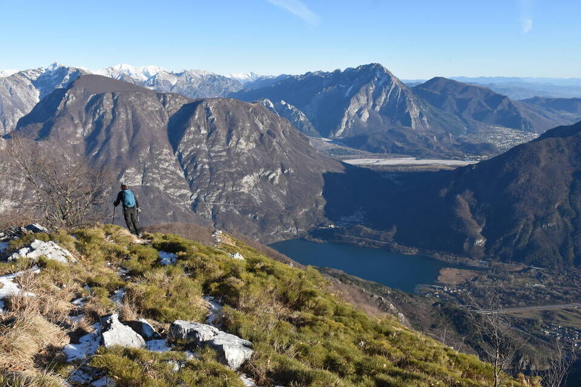